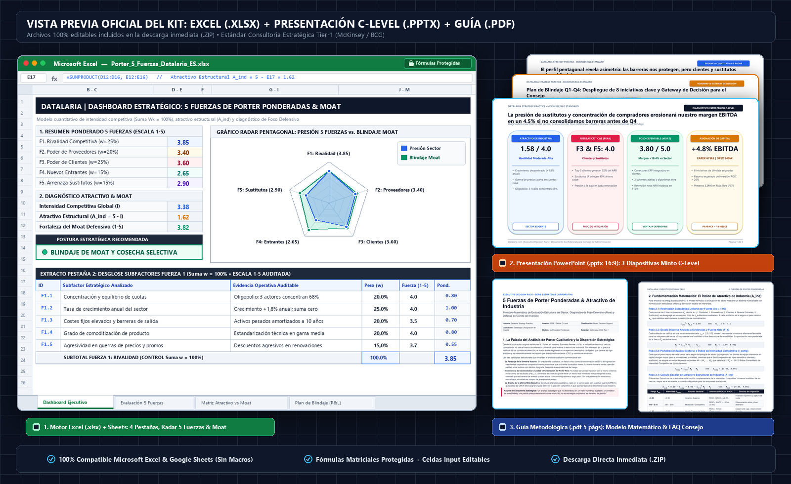

En casi cualquier comité de dirección, sesión anual de planificación estratégica o revisión de adquisiciones (M&A) se proyecta invariablemente el diagrama canónico de las 5 Fuerzas de Michael E. Porter: un bloque central de rivalidad rodeado por proveedores, clientes, nuevos entrantes y productos sustitutos.
Sin embargo, en el 90% de las corporaciones, este marco sufre una degradación sistemática:
- Equivalencia tipográfica engañosa: Una amenaza existencial como la concentración del 55% de ingresos en tres clientes que exigen descuentos anuales comparte el mismo peso visual que un trámite burocrático de licencias. La mente humana asume intuitivamente simetría donde existe una asimetría radical de riesgo.
- Incapacidad de agregación objetiva: El modelo cualitativo no proporciona una métrica única auditable. Dos directivos frente al mismo informe pueden concluir simultáneamente que el sector es “muy atractivo” o “demasiado hostil”, dependiendo de su elocuencia retórica o de su aversión personal al riesgo.
- Desconexión con el balance y la cuenta de resultados (P&L): Finalizada la reunión estratégica, nadie puede justificar con precisión qué partidas de inversión en capital (CAPEX) o gasto operativo (OPEX) deben consignarse en el presupuesto para neutralizar las fuerzas de mayor severidad.
Para transformar este ejercicio teórico en una herramienta de decisión vinculante y de grado Consejo de Administración (C-Level), es imprescindible formalizar el análisis mediante un motor matemático ponderado y reproducible, acompañado de un perfil pentagonal en gráfico Radar, una matriz cartesiana de foso defensivo (Economic Moat) y una presentación orientada a la toma de decisiones estructurada.
Identificación de subfactores sin jerarquía de poder ni correlación empírica"] B["2. Formalización Estocástica: Ponderación Normalizada (Σw = 1.00)
Calificación objetiva 1-5 basada en métricas financieras y operativas auditables"] C["3. Motor Cuantitativo: Índice de Intensidad (I_comp) & Atractivo (A_ind)
Cálculo escalar del atractivo estructural de industria: A_ind = 5 - Σ(Wk · Fk)"] D["4. Diagnóstico de Foso (Moat): Matriz Cartesiana Bidimensional
Cruce de Atractivo vs. Barreras Internas (Switching Costs, Patentes, Escala)"] E["5. Última Milla Ejecutiva: Boardroom Presentation (Minto Pyramid)
Action Titles, Radar Chart pentagonal y Gateway de Decisión para Consejo"] A --> B B --> C C --> D D --> E style A fill:#F8FAFC,stroke:#94A3B8,stroke-width:1.5px,color:#0F172A style B fill:#EFF6FF,stroke:#3B82F6,stroke-width:1.5px,color:#1E3A8A style C fill:#EEF2FF,stroke:#6366F1,stroke-width:1.5px,color:#312E81 style D fill:#ECFDF5,stroke:#10B981,stroke-width:1.5px,color:#064E3B style E fill:#0F172A,stroke:#D97706,stroke-width:2px,color:#FFFFFF
🔍 Haz clic en el diagrama para ampliarlo a pantalla completa
Executive Decision Pack: 5 Fuerzas de Porter Ponderadas & Atractivo de Industria
1. ¿Qué es el Análisis de las 5 Fuerzas de Porter? Fundamentos, Estructura del Sector y Objetivos
Para cualquier directivo, inversor o analista que deba evaluar la viabilidad de un modelo de negocio—o para quien se aproxime por primera vez a este marco estratégico—, el Modelo de las 5 Fuerzas de Michael E. Porter (introducido en Harvard Business Review en 1979 y consolidado en su obra canónica Competitive Strategy, 1980) constituye la brújula fundamental de la economía industrial aplicada al management corporativo.
A diferencia de los diagnósticos puramente operativos o centrados en la eficiencia interna y el marketing, el principio rector de Porter postula una verdad económica demostrada empíricamente: la rentabilidad sostenida de una empresa a largo plazo y su capacidad de batir el coste de capital ($\text{ROIC} > \text{WACC}$) vienen determinadas, en primer término, por la estructura subyacente de su industria y el reparto del valor económico a lo largo de su cadena de suministro.
La Anatomía del Modelo: Los Ejes y Fuerzas Competitivas Representadas
El marco de Porter descompone la presión competitiva en dos grandes ejes relacionales que dan origen a cuatro vectores externos de frontera que convergen y determinan el núcleo central de rivalidad:
- Eje Vertical (Cadena de Valor y Captura del Excedente): Evalúa el poder de fijación de precios y negociación aguas arriba (upstream) y aguas abajo (downstream):
- Poder de Negociación de los Proveedores (F2): Capacidad de los suministradores de insumos críticos para subir precios, imponer plazos o limitar calidades.
- Poder de Negociación de los Clientes (F3): Capacidad de los compradores para forzar reducciones de precios, exigir mayores prestaciones o licitar contratos en subastas a la baja.
- Eje Horizontal (Fronteras del Mercado y Amenazas Externas): Mide la vulnerabilidad del sector ante la alteración del equilibrio entre oferta y demanda:
- Amenaza de Nuevos Entrantes (F4): Facilidad con la que nuevos competidores pueden irrumpir en el mercado, determinada por la altura de las barreras de entrada (capital inicial, economías de escala, patentes o licencias).
- Amenaza de Productos Sustitutos (F5): Riesgo de que tecnologías o soluciones alternativas satisfagan la misma necesidad del cliente con una mejor relación precio-rendimiento.
- El Centro de Gravedad (Rivalidad entre Competidores Existentes - F1): La intensidad de la batalla diaria entre los operadores actuales (guerras de precios, gasto publicitario, canibalización de cuota), resultante directa de la interacción de los cuatro vectores anteriores.
| Dimensión y Vector | Fuerza Competitiva | Mecánica Económica y Erosión de Margen | Variables Críticas y Subfactores Clave | Ejemplos Sectoriales Reales |
|---|---|---|---|---|
| Eje Vertical (Cadena de Suministro Aguas Arriba) |
Poder de Proveedores (F2) | Capturan el margen bruto encareciendo los costes unitarios de aprovisionamiento o imponiendo condiciones de suministro inflexibles. | • Concentración de proveedores vs. fragmentación del sector. • Existencia de insumos sustitutos. • Costes de cambio de proveedor (switching costs). • Amenaza de integración vertical hacia adelante. |
• Aerolíneas frente al duopolio Boeing/Airbus. • Fabricantes de PC frente a chips GPU/CPU (Nvidia, Intel). |
| Eje Vertical (Cadena de Demanda Aguas Abajo) |
Poder de Clientes (F3) | Comprimen los ingresos forzando descuentos en precios, extensiones de plazos de pago y sobrecostes de personalización de producto. | • Concentración de cartera (% ingresos en top 3 clientes). • Sensibilidad al precio y margen del comprador. • Facilidad de sustitución del proveedor por el cliente. • Amenaza creíble de integración vertical hacia atrás. |
• Proveedores de componentes frente a grandes marcas de automoción (OEMs). • Marcas de alimentación frente al canal de Gran Distribución (Mercadona, Walmart). |
| Eje Horizontal (Frontera de Oferta y Expansión) |
Amenaza de Nuevos Entrantes (F4) | Erosiona los márgenes al incrementar la capacidad agregada de la industria y desatar batallas por captación de clientes. | • Economías de escala y masa crítica mínima. • Necesidades iniciales de inversión en CAPEX. • Barreras regulatorias, certificaciones y patentes. • Acceso a canales de distribución consolidados. |
• Banca tradicional protegida por licencias y solvencia bancaria. • Sectores digitales de bajo capital con invasión masiva de startups competidoras. |
| Eje Horizontal (Frontera de Demanda y Sustitución) |
Amenaza de Sustitutos (F5) | Establece un “techo máximo” a los precios de la industria; si los precios suben, la demanda migra hacia la tecnología alternativa. | • Relación coste/rendimiento del producto sustituto. • Coste de cambio asumido por el usuario. • Propensión del cliente a adoptar nuevas tecnologías. • Disrupciones provocadas por IA o automatización. |
• Plataformas de streaming frente a salas de cine y televisión lineal. • Tren de alta velocidad frente al puente aéreo Madrid-Barcelona. |
| Centro de Gravedad (Campo de Batalla Interno) |
Rivalidad entre Competidores (F1) | Destruye el beneficio operativo mediante guerras de descuentos de precios, escalada en inversión promocional y rotación continua de clientes. | • Número y balance de tamaño entre competidores. • Tasa de crecimiento vegetativo del sector. • Nivel de diferenciación de la oferta. • Altura de las barreras de salida (costes de liquidación o activos especializados). |
• Operadores de telecomunicaciones móviles en mercados saturados. • Plataformas de Delivery compitiendo agresivamente por subsidiar al usuario final. |
¿Cuál es el Objetivo Principal del Análisis de las 5 Fuerzas?
El objetivo primordial del modelo de Porter no es elaborar un ejercicio descriptivo o enciclopédico de la competencia, sino diagnosticar el atractivo estructural de la industria y orientar la asignación estratégica de capital. Específicamente, una evaluación rigurosa busca responder a tres preguntas críticas para el Consejo de Administración:
- ¿Permite la estructura de este sector generar retornos sobre el capital invertido sostenidos por encima del coste medio ponderado del capital ($\text{ROIC} > \text{WACC}$), o es un sector estructuralmente destructor de valor?
- ¿En qué puntos específicos de la cadena de valor se está transfiriendo o perdiendo el excedente económico (hacia proveedores dominantes, clientes concentrados o rivales en guerra de precios)?
- ¿Qué postura estratégica genérica (Liderazgo en Costes, Diferenciación o Enfoque) y qué inversiones en blindaje (Economic Moat) debe acometer la empresa para aislar sus márgenes de las fuerzas más hostiles?
Resultados Esperados: ¿Qué debe arrojar un Análisis de 5 Fuerzas Eficaz?
Para que este análisis trascienda la teoría y se traduzca en una herramienta de gestión vinculante, debe proporcionar tres resultados tangibles a la alta dirección:
- Índice Agregado de Atractivo de Industria y Presión Competitiva: Una calificación objetiva y auditable que sustituya las opiniones subjetivas por una métrica cuantitativa comparable en el tiempo o entre diferentes unidades de negocio.
- Mapa de Asimetrías de Negociación y Brechas de Foso Defensivo: Una visualización precisa (mediante perfiles de gráfico Radar pentagonal) que señale exactamente qué fuerzas limitan la rentabilidad y dónde es más vulnerable la compañía frente al entorno.
- Plan de Blindaje Estratégico y Asignación de Fondos (Moat Action Plan): Una hoja de ruta ejecutiva con iniciativas concretas, asignación de CAPEX/OPEX, plazos e impacto previsto en EBITDA para construir costes de cambio (switching costs), economías de escala o activos intangibles que protejan la posición corporativa.
2. La Falacia del Análisis de Porter Cualitativo y el Síndrome del Informe Inerte
El modelo publicado originalmente por Michael E. Porter en Harvard Business Review (1979) revolucionó la economía industrial al demostrar que la rentabilidad a largo plazo de una empresa no depende exclusivamente de su eficiencia interna, sino de la estructura subyacente del sector. No obstante, su traslación acrítica a las presentaciones corporativas ha generado tres patologías recurrentes:
2.1. La Paradoja de la Simetría Ilusoria
Cuando un equipo estratégico lista cinco viñetas bajo cada una de las fuerzas sin ponderación explícita, se produce una distorsión cognitiva severa. Si en la fuerza “Poder de Proveedores” se menciona “volatilidad en materias primas” y en “Amenaza de Sustitutos” se indica “aparición de software de automatización mediante IA con un 40% menor coste unitario”, el comité suele debatir ambas amenazas con idéntica dedicación horaria. En la práctica financiera, la primera amenaza puede representar una oscilación del 1.5% en el margen bruto, mientras que la segunda representa la obsolescencia total del modelo de negocio en un horizonte de 24 meses.
2.2. La Ausencia de Elasticidades Cruzadas y Poder Negociador Real
Las fuerzas competitivas no operan en el vacío ni tienen la misma elasticidad frente a los precios. En sectores intensivos en capital (como la siderurgia o la automoción), la Rivalidad y las Barreras de Salida dominan el ciclo de rentabilidad. En contraste, en sectores de tecnología empresarial B2B, el Poder de los Clientes y la Amenaza de Sustitutos concentran el 75% del riesgo de compresión de márgenes. Un modelo analítico riguroso debe permitir la asignación asimétrica de pesos sectoriales ($W_k$), reflejando la realidad econométrica del sector evaluado.
2.3. La Desconexión de la “Última Milla Ejecutiva”
Un informe que concluye con frases vagas como “el sector presenta una rivalidad moderada con oportunidades de diferenciación” es inútil para un Director Financiero (CFO) o un Comité de Inversiones. La estrategia corporativa de primer nivel (estándar McKinsey / BCG) exige responder a tres preguntas ineludibles:
- ¿Cuál es el diferencial esperado entre la rentabilidad del capital invertido y el coste de capital ($\text{ROIC} - \text{WACC}$)?
- ¿Qué margen EBITDA está estructuralmente protegido por nuestras ventajas competitivas?
- ¿Cuánto capital (CAPEX) y gasto operativo (OPEX) debemos consignar en el presupuesto de capital para blindar los contratos y elevar los costes de cambio (switching costs)?
3. Fundamentación Matemática: El Índice de Atractivo de Industria ($A_{\text{ind}}$)
Para superar la vaguedad descriptiva, formalizamos el análisis de las cinco fuerzas como un sistema multivariable con normalización estocástica unitaria y derivación escalar.
Economías de escala, capital e intangibles"] E2["Poder de Proveedores (F2)
Concentración, insumos críticos y costes de cambio"] E3["Poder de Clientes (F3)
Concentración de compra, sensibilidad y tender auctions"] E4["Amenaza de Sustitutos (F5)
Curva precio-rendimiento y adopción tecnológica"] end RIV["RIVALIDAD COMPETITIVA (F1)
Centro de gravedad del sector: oligopolio, crecimiento y guerras de precios"] E1 --> RIV E2 --> RIV E3 --> RIV E4 --> RIV style RIV fill:#EFF6FF,stroke:#2563EB,stroke-width:2.5px,color:#0F172A style E1 fill:#F0FDFA,stroke:#0D9488,stroke-width:1.5px,color:#0F766E style E2 fill:#FFFBEB,stroke:#D97706,stroke-width:1.5px,color:#92400E style E3 fill:#FFF1F2,stroke:#E11D48,stroke-width:1.5px,color:#9F1239 style E4 fill:#F5F3FF,stroke:#7C3AED,stroke-width:1.5px,color:#5B21B6
🔍 Haz clic en el diagrama para ampliarlo a pantalla completa
Paso 1: Definición de Subfactores y Restricción Estocástica Unitaria ($w_{k,i}$)
Cada una de las cinco fuerzas canónicas $k \in \{1: \text{Rivalidad}, 2: \text{Proveedores}, 3: \text{Clientes}, 4: \text{Entrantes}, 5: \text{Sustitutos}\}$ se descompone en un conjunto de $n_k$ subfactores auditables ($n_k \in [4, 5]$):
$$\mathcal{F}_k = \{f_{k,1}, f_{k,2}, \dots, f_{k,n_k}\}$$A cada subfactor $f_{k,i}$ se le asigna un peso relativo $w_{k,i} \in [0, 1]$. Para garantizar que ningún analista distorsione el diagnóstico añadiendo subfactores artificiales, se impone la restricción estocástica de normalización unitaria:
$$\sum_{i=1}^{n_k} w_{k,i} = 1.00 \quad (100\% \text{ en cada fuerza})$$Paso 2: Escala Discreta Anclada a Evidencias y Calificación ($c_{k,i}$)
Cada subfactor se califica en una escala estandarizada de intensidad $c_{k,i} \in [1.0, 5.0]$, donde:
- 1.0 = Intensidad Muy Baja (Favorable): La fuerza no ejerce presión sobre los márgenes; el excedente económico permanece dentro del sector.
- 3.0 = Intensidad Moderada (Paridad): Nivel estándar de mercado; requiere eficiencia operativa para mantener retornos medios.
- 5.0 = Intensidad Crítica (Hostil / Destructora): La fuerza presiona agresivamente a la baja los precios o eleva los costes, destruyendo el margen económico del sector.
La puntuación neta ponderada de la fuerza $F_k$ se calcula mediante el producto escalar:
$$F_k = \sum_{i=1}^{n_k} w_{k,i} \cdot c_{k,i} \quad \text{donde } F_k \in [1.00, 5.00]$$Paso 3: Ponderación Macro-Sectorial ($W_k$) e Índice de Intensidad ($I_{\text{comp}}$)
La importancia macroeconómica de cada una de las cinco fuerzas varía en función del modelo de negocio de la industria. Se establece un vector de ponderación sectorial $W = (W_1, W_2, W_3, W_4, W_5)$ sujeto a la condición $\sum_{k=1}^5 W_k = 1.00$.
El Índice Consolidado de Intensidad Competitiva ($I_{\text{comp}}$) sintetiza la presión competitiva global:
$$I_{\text{comp}} = \sum_{k=1}^5 W_k \cdot F_k \quad \text{con } I_{\text{comp}} \in [1.00, 5.00]$$Paso 4: Derivación Escalar del Atractivo Estructural de Industria ($A_{\text{ind}}$)
El atractivo intrínseco del sector es la función complementaria de la hostilidad de sus fuerzas. A menor intensidad competitiva, mayor es la capacidad colectiva del sector para generar rentabilidades por encima del coste de capital ($\text{ROIC} > \text{WACC}$):
$$A_{\text{ind}} = 5.00 - I_{\text{comp}} = 5.00 - \sum_{k=1}^5 W_k \cdot F_k \quad \text{con } A_{\text{ind}} \in [0.00, 4.00]$$| Rango de $A_{\text{ind}}$ | Intensidad ($I_{\text{comp}}$) | Entorno Sectorial | Spread Financiero ($\text{ROIC} - \text{WACC}$) | Directriz Estratégica del Consejo |
|---|---|---|---|---|
| $\ge 2.20$ | $\le 2.80$ | Atractivo Superior | $> +6.0\%$ | Expansión comercial agresiva, captura de cuota y reinversión de caja. |
| $1.40 - 2.19$ | $2.81 - 3.60$ | Moderado / Competitivo | $+1.0\%$ a $+3.0\%$ | Diferenciación activa, protección de costes de cambio y disciplina de precios. |
| $< 1.40$ | $> 3.60$ | Hostil / Trampa de Valor | $< 0.0\%$ (Destrucción) | Cosecha de flujo libre de caja, reorientación a nicho hiper-defendible o desinversión. |
4. El Perfil Pentagonal y el Gráfico Radar Dinámico
La agregación escalar en $I_{\text{comp}}$ y $A_{\text{ind}}$ proporciona la métrica sintética necesaria para el CFO, pero oculta la geometría de la amenaza. Para que un Comité de Dirección visualice de forma inmediata la naturaleza del riesgo, el modelo proyecta las cinco fuerzas en un gráfico Radar pentagonal dinámico.
En un perfil radar equilibrado, los vértices revelan con precisión quirúrgica dónde debe intervenir la compañía:
- Perfil Asimétrico con Picos en $F_3$ (Clientes) y $F_5$ (Sustitutos): Comportamiento típico de industrias SaaS y servicios profesionales en transición digital. La entrada está bloqueada por capital o conocimiento, pero los clientes consolidados disponen de alternativas emergentes y exigen reducciones en cada ciclo de renovación.
- Perfil Asimétrico con Picos en $F_1$ (Rivalidad) y $F_2$ (Proveedores): Típico de manufactura pesada, logística y commodities industriales. La batalla por cuota es feroz y los proveedores de materias primas tienen poder de fijación de precios, comprimiendo el margen bruto por ambos extremos.
En nuestra plantilla oficial de Excel, el gráfico Radar está vinculado directamente a las celdas de cálculo de la Pestaña 2 mediante objetos nativos de openpyxl, recalculándose de manera instantánea cuando el usuario ajusta cualquier nota o ponderación.
5. Algoritmo de Blindaje Estratégico (Economic Moat) y Matriz Cartesiana
Un axioma fundamental de la consultoría estratégica de alta dirección establece que un sector estructuralmente hostil no condena necesariamente a una compañía si esta posee un foso económico defendible (Economic Moat).
Los Cuatro Pilares del Moat Corporativo
Para evaluar si la compañía es capaz de disociar su rentabilidad de la gravedad del sector, el modelo audita cinco pilares internos de ventaja competitiva ($M \in [1.0, 5.0]$):
- Costes de Cambio de Cliente (Switching Costs): Grado de integración en los flujos de trabajo del cliente (APIs profundas, bases de datos integradas, procedimientos operativos estándar). Romper el contrato supone para el cliente semanas de parada técnica o costes de re-entrenamiento prohibitivos.
- Efectos de Red Directos e Indirectos (Network Effects): El valor de la plataforma se incrementa con cada nuevo participante corporativo, generando barreras de escala insalvables para nuevos aspirantes.
- Activos Intangibles & Propiedad Intelectual: Patentes industriales vigentes, licencias regulatorias exclusivas y reputación de marca corporativa verificable.
- Ventajas en Estructura de Costes (Scale Economies): Curva de experiencia operativa de largo recorrido y economías de escala en compras que permiten operar con costes unitarios significativamente inferiores a la media del sector.
- Cultura de Ejecución y Velocidad de Innovación: Capacidad de desplegar iteraciones de producto y funcionalidades a un ritmo 3x superior al de los competidores tradicionales.
Matriz Cartesiana: Atractivo de Industria ($A_{\text{ind}}$) vs. Fortaleza del Moat ($M$)
Cruzando el Atractivo Estructural de la Industria (Eje X) con la Fortaleza del Foso Defensivo de la Empresa (Eje Y), obtenemos la matriz bidimensional de decisión estratégica:
🔍 Haz clic en el diagrama para ampliarlo a pantalla completa
- Cuadrante I: Líder Estratégico (Alto $A_{\text{ind}}$, Alto $M$): Sector rentable y empresa con foso inexpugnable. Directriz: reinversión agresiva de capital, adquisiciones de competidores adyacentes y expansión de múltiplos de valoración.
- Cuadrante II: Bastión Defensivo (Bajo $A_{\text{ind}}$, Alto $M$): Sector hostil y competitivo, pero la compañía está blindada por costes de cambio y patentes. Directriz: cosecha de flujo libre de caja (FCF), política activa de dividendos y defensa estricta de márgenes sin incurrir en guerras de precios destructivas.
- Cuadrante III: Terreno en Disputa (Alto $A_{\text{ind}}$, Bajo $M$): Sector con vientos de cola muy rentables, pero la empresa carece de barreras defendibles frente a nuevos entrantes o rivales agresivos. Directriz: prohibido pagar dividendos extraordinarios; todo el capital debe canalizarse urgentemente hacia la construcción de patentes, acuerdos de exclusividad y fidelización contractual.
- Cuadrante IV: Trampa de Valor (Bajo $A_{\text{ind}}$, Bajo $M$): Sector implacable y empresa sin ventaja competitiva duradera. Directriz: congelación total de CAPEX expansivo, recorte drástico de costes indirectos y reorientación de activos hacia un micro-nicho defendible antes de considerar la venta o liquidación.
6. Caso de Estudio Industrial B2B Resuelto: Diagnóstico y Blindaje en el Sector Tecnológico
Para ilustrar la aplicación práctica de esta metodología ante un Comité de Inversiones, presentamos un caso de estudio real anonimizado correspondiente a una empresa europea de software embebido e instrumentación industrial (TechMotion Solutions).
6.1. Contexto Operativo y Financiero
- Facturación Anual: 45.0 M€
- EBITDA Histórico: 8.32 M€ (Margen EBITDA: 18.5%)
- Estructura Comercial: Los 5 principales clientes corporativos concentran el 52% de los ingresos totales (23.4 M€ en contratos de renovación anual).
- Amenaza Inminente: En los últimos 12 meses, dos grandes clientes solicitaron renegociaciones a la baja del 15% argumentando la existencia de herramientas de automatización basadas en IA que reducen el tiempo operativo en un 40%.
6.2. Evaluación Cuantitativa de las 5 Fuerzas (Modelo Datalaria)
| Fuerza Evaluada | Peso Macro ($W_k$) | Puntuación ($F_k$) | Severidad | Subfactor Crítico Identificado |
|---|---|---|---|---|
| F1: Rivalidad Competitiva | 25% | 3.45 | Moderada-Alta | 3 grandes actores controlan el 68% del mercado; licitaciones con descuentos agresivos. |
| F2: Poder de Proveedores | 20% | 3.25 | Moderada | Concentración en proveedores de microprocesadores especializados (+12% coste anual). |
| F3: Poder de Clientes | 25% | 4.00 | Crítica | Alta concentración de compra (Top 5 = 52% ARR) y subastas inversas estandarizadas. |
| F4: Nuevos Entrantes | 15% | 2.20 | Baja (Protegida) | Barrera alta: requiere 3M€ de inversión mínima y homologación de seguridad ISO 27001. |
| F5: Amenaza de Sustitutos | 15% | 3.85 | Crítica | Plataformas cloud de automatización que ofrecen un 40% de ahorro de costes operativos. |
| TOTAL CONSOLIDADO | 100% | $I_{\text{comp}} = 3.42$ | Hostil | Atractivo Estructural: $A_{\text{ind}} = 1.58 / 4.00$ |
6.3. El Diagnóstico Financiero del Escenario Inercial
El modelo alertó al Consejo de Administración de que mantener la postura comercial inercial provocaría:
- Pérdida de 1 gran cuenta corporativa en Q3 (-4.6 M€ en ARR).
- Descuento medio forzado del 12% en las 4 cuentas restantes (-2.25 M€ en ingresos).
- Colapso proyectado del margen EBITDA del 18.5% al 14.0% en un plazo de 18 meses, lo que supondría una destrucción anual de flujo de caja libre de 3.15 M€ y una contracción en la valoración de la compañía de más de 25 M€ (asumiendo un múltiplo de salida de 8x EBITDA).
6.4. El Plan de Blindaje Estratégico Aprobado
El Comité de Dirección aprobó un plan de choque con 675.000 € en CAPEX y 240.000 € en OPEX anual, estructurado en tres iniciativas prioritarias:
- Despliegue de Conectores ERP Propietarios (CTO - 140k€ CAPEX): Desarrollo de integraciones nativas profundas en los sistemas SAP y Oracle de los 5 clientes clave, elevando el tiempo de migración técnica a más de 9 meses. Resultado: Churn reducido del 6.8% al 1.2%.
- Módulo Nativo de Automatización con IA (VP Product - 185k€ CAPEX): En lugar de competir contra los sustitutos, la empresa absorbió la funcionalidad integrándola de forma nativa en su catálogo. Resultado: Adopción del 68% de la base instalada en 6 meses.
- Contratos Marco Plurianuales con Volume Tiers (CEO - 30k€ OPEX): Cierre de acuerdos a 3 años blindados con cláusulas de penalización por desenganche. Resultado: ARR garantizado incrementado del 54% al 81%.
Retorno Financiero Auditable: El margen EBITDA se protegió en el 18.8% (+4.8 puntos porcentuales respecto al escenario de erosión inercial), preservando 2.16 M€ anuales de caja operativa, con un Payback de 13.8 meses y un ROIC incremental del 28.4%.
7. Executive Decision Pack Oficial: 5 Fuerzas de Porter Ponderadas
Para los líderes corporativos, consultores estratégicos, directores de M&A y responsables financieros que necesiten aplicar esta metodología en su organización con estándar de las firmas Tier-1 (McKinsey, BCG, Bain), hemos empaquetado todos los activos programáticos oficiales:
Executive Decision Pack: 5 Fuerzas de Porter Ponderadas & Atractivo de Industria

🔍 Vista previa real de los entregables incluidos: Motor Excel (.xlsx) con Radar Pentagonal y Matriz Moat, Presentación C-Level (.pptx 16:9) de 3 diapositivas y Guía Metodológica (.pdf) de 5 páginas. (Clic para ampliar)- Motor Excel (.xlsx) con 4 pestañas interconectadas, fórmulas matriciales protegidas y gráfico Radar pentagonal dinámico
- Matriz cartesiana Atractivo vs. Moat con diagnóstico de postura estratégica y semáforo financiero
- Presentación PowerPoint (.pptx 16:9 Widescreen) editable con Pirámide de Minto, Action Titles y Board Decision Gateway
- Guía Metodológica Oficial en PDF (5 páginas) con demostraciones matemáticas, caso industrial resuelto y FAQ de Consejo
- Compatibilidad garantizada al 100% con Microsoft Excel y Google Sheets sin macros complejas
8. Protocolo de Defensa en Comité de Dirección (FAQ)
¿Cómo responder al CFO si cuestiona la objetividad en la asignación de los pesos de las fuerzas?
La asignación de pesos no es una estimación improvisada en una sesión de brainstorming. Se fundamenta en un protocolo en dos fases:
- Calibración Delphi: Los miembros de la mesa directiva evalúan de manera ciega e independiente la relevancia de cada fuerza y subfactor.
- Anclaje en Cifras Auditadas: Cada peso se correlaciona con partidas del balance y del P&L (por ejemplo, el peso de Proveedores $F_2$ se ancla al porcentaje que representa el COGS directo sobre el ingreso total; el peso de Clientes $F_3$ se ancla al índice Herfindahl-Hirschman de concentración de la cartera de clientes). Además, la plantilla de Excel incluye un test de sensibilidad que prueba que variaciones de $\pm 15\%$ en los pesos individuales no modifican el cuadrante estratégico resultante.
¿Por qué invertir en costes de cambio si los clientes demandan APIs abiertas y portabilidad de datos?
Los costes de cambio eficientes en el siglo XXI no se crean mediante formatos cerrados ilegales ni cautiverio tecnológico artificial. Se construyen mediante “fricción de conveniencia”: integración profunda de flujos de trabajo, automatización de datos históricos, entrenamiento acumulado del equipo operativo del cliente y acuerdos de nivel de servicio (SLA) críticos. El cliente es contractualmente libre de cambiar de proveedor, pero el coste organizativo de la migración hace que la decisión sea económicamente irracional.
¿Cómo defender ante el CEO el riesgo de canibalización al lanzar módulos propios inspirados en sustitutos tecnológicos?
La canibalización preventiva es una ley inexorable de la supervivencia corporativa. Si un sustituto tecnológico ofrece una relación precio-rendimiento superior, el mercado lo adoptará de manera inevitable. Es preferible canibalizar una línea propia de producto con un margen ligeramente inferior pero reteniendo la relación comercial y el flujo de caja, que ceder la cuenta a un competidor disruptor que terminará desplazando el catálogo completo de la empresa.
¿Cómo conectar este índice de atractivo con los modelos de descuento de flujos de caja (DCF) y múltiplos de M&A?
En valoraciones financieras y procesos de fusiones y adquisiciones (M&A), el índice $A_{\text{ind}}$ incide directamente sobre el coste de capital ponderado ($\text{WACC}$) y la tasa de crecimiento terminal ($g$). Un sector con un atractivo bajo ($A_{\text{ind}} < 1.50$) exige incorporar una prima de riesgo sectorial de 150 a 250 puntos básicos, reflejando la alta probabilidad de compresión de márgenes a medio plazo y evitando pagar múltiplos de EBITDA inflados e insostenibles.
9. Referencias Bibliográficas Canónicas de Autoridad
-
Porter, Michael E. (1979). “How Competitive Forces Shape Strategy”. Harvard Business Review, 57(2), 137–145.
Artículo fundacional donde Porter introduce por primera vez las cinco fuerzas que determinan la rentabilidad estructural de los sectores económicos. Ver en Harvard Business Review | DOI:10.1016/0024-6301(79)90097-0 -
Porter, Michael E. (1980). Competitive Strategy: Techniques for Analyzing Industries and Competitors. Free Press, New York.
La obra magna de la estrategia corporativa contemporánea; detalla el análisis estructural de sectores, las barreras de entrada, las economías de escala y las estrategias genéricas. ISBN:978-0684841489 -
Porter, Michael E. (1996). “What is Strategy?”. Harvard Business Review, 74(6), 61–78.
Ensayo canónico que distingue rigurosamente entre la eficacia operativa (hacer lo mismo mejor que los rivales) y la estrategia competitiva (elegir un conjunto deliberado de actividades diferenciadas). Ver en Harvard Business Review -
Porter, Michael E. (2008). “The Five Competitive Forces That Shape Strategy”. Harvard Business Review, 86(1), 78–93.
Actualización oficial del marco clásico, incorporando la economía digital, la defensa frente a sustitutos tecnológicos y los errores comunes de aplicación. Ver en Harvard Business Review -
Minto, Barbara (2009). The Pyramid Principle: Logic in Writing and Thinking. Financial Times / Prentice Hall (3ª Edición).
El estándar de comunicación ejecutiva y estructuración de diapositivas en firmas como McKinsey & Company; base metodológica de los Action Titles y la jerarquía piramidal de nuestras presentaciones. ISBN:978-0273710516 -
Brandenburger, Adam M., & Nalebuff, Barry J. (1996). Co-opetition: A Revolution Mindset That Combines Competition and Cooperation. Currency Doubleday, New York.
Ampliación game-theoretic del modelo de Porter que introduce la ‘Red de Valor’ (Value Net) y el papel de las empresas complementarias (complementors) en la rentabilidad de la industria. ISBN:978-0385479509